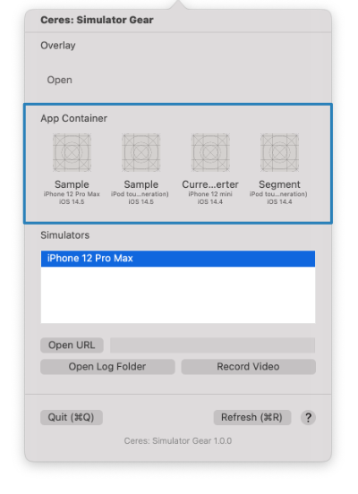

App Container # Quickly open the iOS application container directory. The most recent applications will be on the list as shown. Simply click on the app icon to open the app container directory.  Home